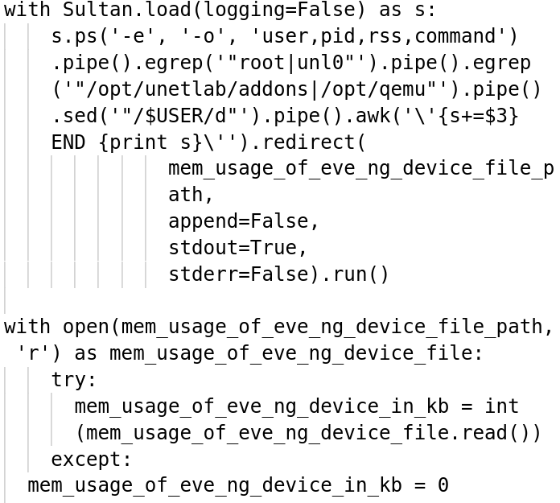
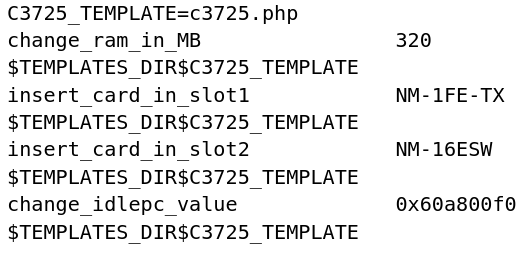
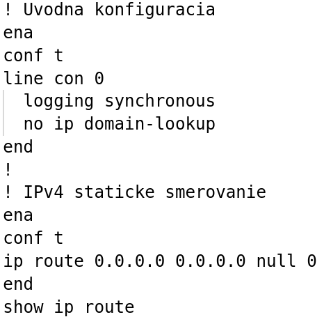
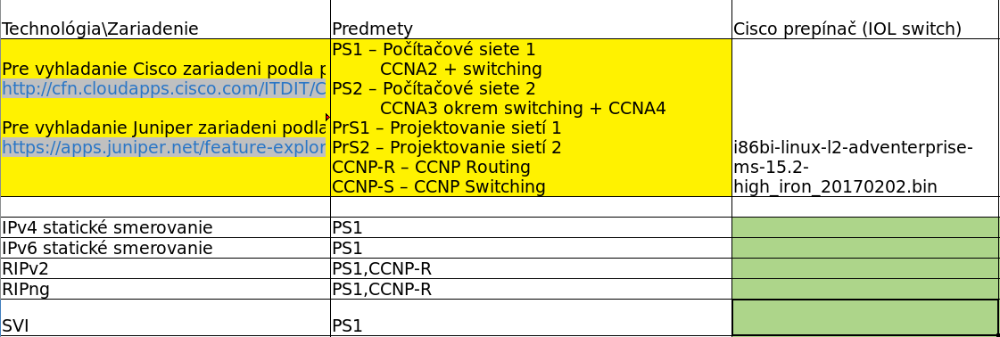
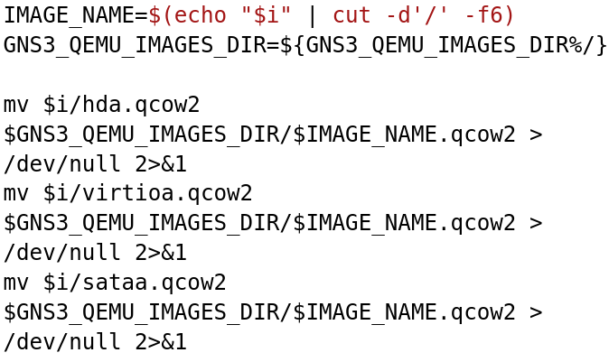
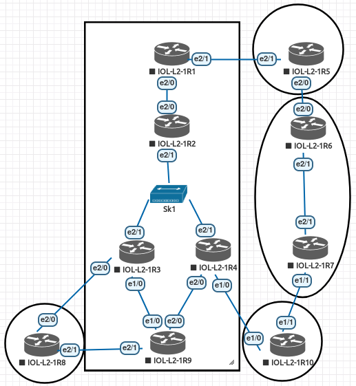
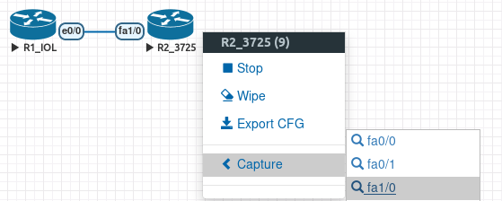
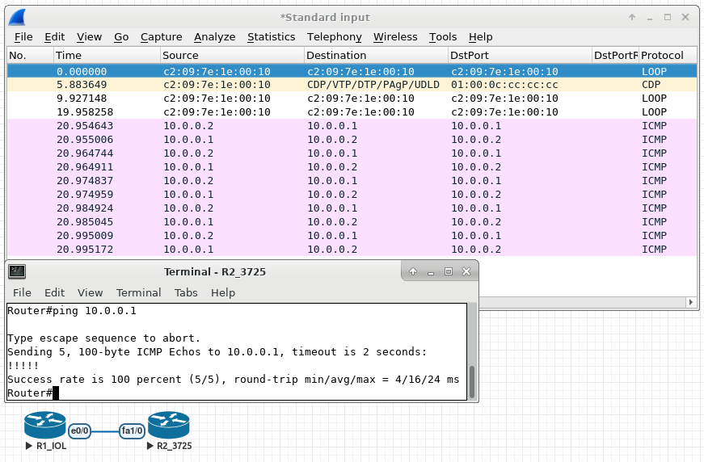

Sieťové virtualizačné nástroje a ich využitie vo vyučovacom procese KIS
Bc. Andrej Šišila
doc. Ing. Pavel Segeč, PhD.
Špecifikácia projektu
- Nahradenie fyzických a virtuálnych laboratórii jediným virtualizovaným riešením
- Podpora virtuálnych zariadení používaných na katedre
- Vypracovávanie konfiguračných úloh pre vybrané vyučovacie predmety.
Súčasný stav
Virtuálne sieťové nástroje používané na katedre:
Packet Tracer - Počítačové siete 1/2 [PS1, PS2] (CCNA)
Dynamips/Dynalab - Počítačové siete 2 (CCNA), Projektovanie sietí 1 [PrS1], Pokročilé prepínanie/smerovanie v informačno-komunikačných sieťach (CCNP Switching/Routing)
GNS3 - Používaný iba lokálne
OpenStack
Nedostatky súčasného stavu
- Rôzne predmety
- Rôzne nástroje
- Technologická špecializácia
- Potreba zjednotenia
- Zjednodušenie vyučovacieho procesu
- Rozšírenie vyučovaných tém
Ciele diplomovej práce
Zjednotenie čo najväčšieho množstva funkcionalít už existujúcich nástrojov do jedného.
Čiastkové ciele
- Prieskum nástrojov pre sieťovú virtualizáciu
- Výber jedného riešenia
- Analýza vyučovania
- Zber virtuálnych zariadení
- Nasadenie do vyučovania
Prieskum nástrojov pre sieťovú virtualizáciu
Účel
Prieskum a porovnanie existujúcich riešení pre potreby katedry podľa zvolených kritérií.
Kritériá
- Open-source.
- Podpora zariadení od rôznych výrobcov.
- Jednoduché ovládanie.
Kritériá (pokr.)
- Vzdialený prístup ku zariadeniam.
- Správa topológií.
- Používateľ môže mať spustených viacero topológií.
- Možnosť práce viac ľudí naraz na rovnakom projekte.
- Možnosť prepojiť topológiu so živou sieťou.
- Podpora nástroja v budúcnosti.
Výsledok
Zoznam nástrojov a ich funkcionalít.
Výber jedného riešenia
Účel
- Výber jedného nástroja podľa definovaných kritérii.
- Nasadenie nástroja do sieťovej infraštruktúry.
Metodika
- Inštalácia
- Úprava nástroja
- Administrácia
- Vytvorenie návodov z vyššie uvedených bodov
- EVE-ng
Úprava nástroja
- Sprístupnenie používateľských rolí.
- Podpora pre typy používateľov
- Učiteľ
- Vytváranie sieťových topológií
- Zadávanie úloh študentom
- Študent
- Konfigurácia zadaných úloh na vytvorenej topológii
- Povolenie úprav používateľských atribútov.
- Vypnutie správy o nízkom rozlíšení obrazovky.
- Zatvorenie topológie so spustenými zariadeniami.
Administrácia
- Zálohovanie.
- Rýchle obnovenie v prípade zlyhania servera.
- Monitorovanie.
- Správa používateľov.
Výsledky
- Dve inštancie EVE-ng servera:
Virtuálny stroj (VMware).- Fyzický server.
- Zálohovací skript -> Zálohovací server (LXC)
Zálohovací skript
EVE-ng + GNS3

Analýza vyučovania
Účel
Prieskum vyučovaných tém na katedre.
Metodika
- Informačné listy predmetov
- Vyučovacie materiály predmetov na katedre
Výsledky
Textový dokument so zoznamom vyučovaných tém.
Virtuálne zariadenia
Účel
- Získavanie stabilných zariadení pre virtuálny nástroj EVE-ng.
- Hľadanie prieniku technológii.
Metodika
- Získavanie.
- Testovanie:
- spustiteľnosti.
- systémových požiadaviek.
- podporovaných technológii.
Výsledky
- Vyše 50 rôznych druhov zariadení, celkovo cca. 100 zariadení
- Tabuľkový dokument s výsledkami testovania spustiteľnosti zariadení.
- Skript na testovanie systémových požiadaviek.
- Tabuľkový dokument s výsledkami testovania systémových požiadaviek zariadení.
- Skript na úpravu šablón pre virtuálne zariadenia podľa systémových požiadaviek.
- Skript na testovanie podporovaných technológií zariadení Cisco.
- Tabuľkový dokument so zoznamom vyučovaných sieťových technológii a zoznamom podporovaných technológii testovaných zariadení.
- Skript na importovanie zariadení z EVE-ng na GNS3 server.
Tabuľkový dokument s výsledkami testovania spustiteľnosti zariadení
Zariadenie | Platforma | Názov súboru | Spôsob virtualizácie | Predvolené prihlasovacie údaje | Spôsob pripojenia | Úspešné spustenie | Poznámky

Skript na testovanie systémových požiadaviek
Tabuľkový dokument s výsledkami testovania systémových požiadaviek zariadení
Čas spúšťania, Odhadovaný počet zariadení, ktoré je možné spustiť naraz a celkovo

Skript na úpravu šablón pre virtuálne zariadenia
podľa systémových požiadaviek
Skript na testovanie podporovaných technológií zariadení Cisco
Tabuľkový dokument so zoznamom vyučovaných sieťových technológii a zoznamom podporovaných technológii testovaných zariadení
Vyučovaná téma | Predmety | Jednotlivé zariadenia
Skript na importovanie zariadení z EVE-ng na GNS3 server
Importovanie iba QEMU zariadení (iná adresárová štruktúra)
Nasadenie do vyučovania
Účel
Overenie použiteľnosti nástroja vo vyučovaní.
Metodika
- Zostavenie topológie z vhodných zariadení.
- Replikácia topológie.
- Vypracovanie úlohy.
Výsledky
- Projektovanie sietí 2
- Počítačové siete 2
- Projektovanie sietí 1
- Integračný balíček pre EVE-ng (Linux)
- SSH tunely - vzdialený prístup k zariadeniam - telnet a VNC.
EVE-ng topológia
Odchytávanie prevádzky v EVE-ng topológii
Odchytávanie prevádzky v EVE-ng topológii
Pokračovanie projektu
- Dokončenie testovania technológii
- podporované technológie pre zariadenia iných výrobcov (napr. Juniper, Nokia)
- EVE-ng - Oprava nedostatkov a pridávanie funkcionalít do nástroja.
- GNS3 - Izolácia a autentifikácia používateľov.
- OpenStack
Výsledky práce
- Analýza dostupných nástrojov pre sieťovú virtualizáciu.
- Inštalácia vybraného nástroja - EVE-ng.
- Analýza vyučovaných technológii vybraných predmetov.
- Získanie a testovanie dostupných virtuálnych zariadení.
- Vytvorenie postupov na testovanie iných virtualizačných nástrojov.
- Vyhodnotenie výstupov testovania - sumárne tabuľkové súbory.
- Skripty (Bash, Python, txt).
- Nasadenie do vyučovania na vybrané predmety.
Ďakujem za Váš čas a pozornosť.
Použitie smerovačov bez sériových liniek v topológií na PrS1
Absencia sériových rozhraní v topológií na PrS1 by nemala mať vplyv na funkčnosť vyučovanej témy.
Pre študentov by bolo vhodnejšie, aby si topológiu sami vytvorili, aby si študenti uvedomili, kde robia chyby napr. pri prepájaní zariadení.
- PS1 - iba fyzické zariadenia.
- PS2, PrS1, PrS2 - fyzické aj virtuálne zariadenia.
- Citlivé webové rozhranie EVE-ng pri používaní viacerými používateľmi.
Cisco Packet Tracer je prístupný iba pre študentov Cisco Network Academy.
- V najnovšej verzií nutný Netacad účet pre jeho používanie.
- Multiuser mód sme na cvičeniach z PS1/2 nevyužívali.
Využitie platformy OpenStack ako virtuálne sieťové laboratórium podľa vzoru jednej ruskej univerzity (OpenNebula).
- Vhodné preskúmať.
- Virtuálne zariadenia k dispozícií.
- Doplniť grafické rozhranie (web/aplikácia).
Zriedkavé využívanie nástroja ViRo2 na katedre.
- Neskúmal som dôvody.
- ViRo2 ako inšpirácia pre EVE-ng a v.v.
- Doplniť grafické rozhranie (web/aplikácia).
- Popularita CMS systému Drupal
Porovnávacie kritéria pre virtuálne sieťové nástroje.
- Úvodné kritériá (12) slúžia na prvotné preskúmanie nástrojov.
- Neskôr museli byť pridané aj ďalšie 4, kvôli spresneniu.
- Dôsledky zberu a implementácie ďalších kritérií:
- Predĺženie vývoja. (nové požiadavky treba špecifikovať, implementovať, otestovať a zdokumentovať)
- Oboznamovanie sa s nástrojom trvalo určitý čas. (identifikácia a spolupráca jednotlivých súčastí EVE-ng)
/